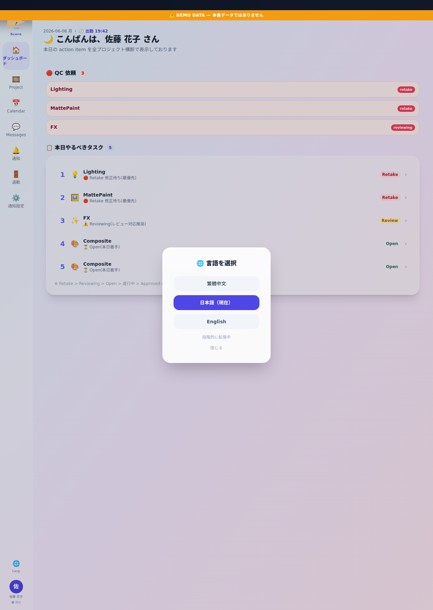

📘 この機能の目的
UI 言語を日本語 / 繁體中文 / English に切替。translate="no" 属性で固有名詞は翻訳除外。
📸 画面

📍 画面例: 桜咲く街 の海外 outsource User が English UI でログイン → SHOT 名「sq01 c05」 は原文保持。
✨ 主な機能
- 3 言語サポート — 日本語 (ja) / 繁體中文 (zh-TW) / English (en)
- サイドメニューから即切替 — cookie に保存 (永続)
- 固有名詞は翻訳除外 — SHOT 名・user 名・project 名は translate="no"
- Calendar UI 連動 — Calendar 言語も同期
🌸 使用例 — 架空 project「桜咲く街」
桜咲く街 の海外 outsource User が English UI でログイン → SHOT 名「sq01 c05」 は原文保持。
🛠 操作方法
- サイドメニュー🌐 → 言語選択
- 日 / 繁 / EN click で即切替
- cookie 保存・次回も同言語で起動